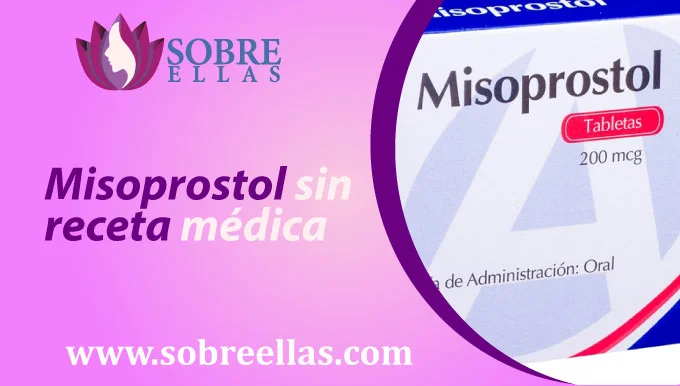
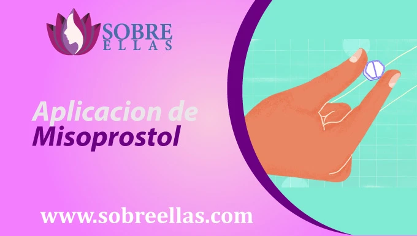
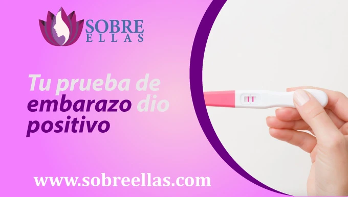
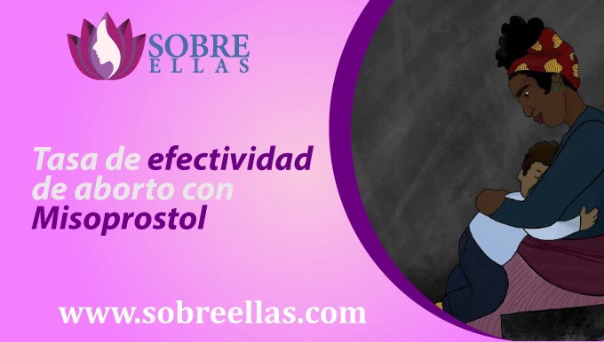
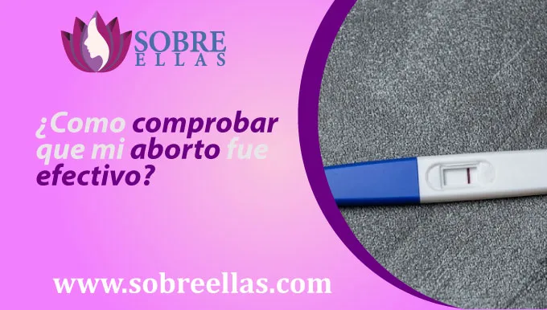

¿Cómo conseguir Misoprostol en Perú?
-
addContenido
Te ayudaremos a que la preocupación salga de tu cabeza a causa de un embarazo no deseado encima. Nuestra asesoría es ofrecida para cada una de ustedes las 24 horas del dia bajo la guía de un personal médico altamente calificado para estas situaciones, quienes descartaran cualquier duda o temor que tengas al realizarte un aborto con las pastillas Misoprostol en Peru. Escríbenos a nuestros números de contacto que dejamos a continuación y ponle fin a ese miedo que no te deja dormir.
Precio del misoprostol en Peru
El precio del Misoprostol en peru es distinto según el lugar donde te encuentres y se convierte en una opcion muy accesible en caso estes buscando realizar un aborto inducido, pero debes tener mucho cuidado de algunas personas que ofrecen el producto solo por vender, sin garantizar un producto de calidad, aprovechandose de la desesperacion por la que estas pasando. Lo recomendable en caso te encuentres en búsqueda de pastillas para abortar con este método, es averiguar diversas opciones en páginas del buscador y elegir lo que mejor se te acomode, ya sea en farmacias físicas o vía online. En esta página dirigida para mujeres como tú, contamos con los mejores precios del mercado, que nos permite posicionarnos como la mejor opción para ti.
Venta del Misoprostol en Peru
La venta de Misoprostol en Peru, ahora es posible, gracias a más mujeres que deciden abortar y ya no continuar con un embarazo no deseado, utilizan estas pastillas como medicamento para inducir un parto. En Perú estas pastillas abortivas son ofrecidas a distintos precios, desde las más accesibles, hasta las que están por las nubes. En muchos de esos lugares para adquirirlas será necesario presentar una receta médica, de lo contrario no te las venderán. Como página tenemos el objetivo de hacer que las cosas funcionen de una mejor manera, es decir, damos la facilidad de otorgar estas pastillas sin ninguna prescripción médica, siempre y cuando nuestras clientas tomen la asesoría que le ofrecemos y sigan las indicaciones al pie de la letra. Nuestro objetivo es lograr atender todas tus dudas, por eso te otorgamos asesoría sin costo adicional de principio a fin, envío a domicilio gratuito de pastillas abortivas 100% seguras y originales en el menor tiempo posible.
Misoprostol sin receta médica
Actualmente en Peru, al igual que en muchas partes del mundo, es obligatorio presentar una receta médica al comprar pastillas, sobre todo si estas son para uso abortivo. Sin embargo en nuestra página se trabaja con otra política, donde lo más importante es ayudarte en el momento que más lo necesitas, porque sabemos que muchas mujeres que han pasado o pasan por la misma situación, no han podido darle fin a su embarazo por falta de posibilidades. Por ello que al realizar tu compra no se te solicitará ninguna receta médica, pero si se te realizará algunas preguntas sobre el estado de tu embarazo con el fin de atenderte de la mejor forma y solucionar tu pedido.
¿Cuánto demora en llegar mi pedido?
Si te encuentras en la ciudad de Lima, capital de Perú, tu pedido cumplirá con la entrega dentro de un plazo no mayor a las 24 horas luego de haberlo solicitado y efectuado el pago. Tenemos diversas facilidades de envío a todo Perú, mediante envío(encomienda) para certificar la seguridad de la entrega. No olvides comunicarte con nosotros y realizar tu pedido por medio de los números que aparecen señalados en la parte inferior.
Precio adicional por envío a domicilio
Nosotros buscamos apoyarte y no te adicionamos nada por envío a domicilio, es completamente gratuito, con tan solo realizar tu solicitud y efectuar el pago tu pedido llegará a tu casa.
Aplicacion de Misoprostol
Una vez ingerida la pastilla, el proceso se efectúa de inmediato (el mismo día), nuestros asesores especializados te enseñarán el paso a paso:
- Debes dividir las 12 pastillas de la tableta y agruparlas en 4 dosis de 3 (30 minutos para cada dosis).
- El medio a utilizar puede ser sublingual o por la vagina.
- Revisa la cantidad de sangrado que presentes por cada dosis.
- Reporta tu estado a nuestro personal médico, para que ellos te orienten como actuar ante cada caso.
- Una vez terminado el tratamiento, se recomienda consumir analgésicos para evitar posibles dolores tras ingerir las pastillas abortivas.
- Informa a tu médico sobre tu condición actual (al dia siguiente) de realizarte el aborto.
Riesgos al consumir Misoprostol
Es necesario conocer y tener en cuenta que si pasamos por una situación de embarazo sin planificación alguna, pero se desea encontrar una solucion mediante un aborto este puede ser quirurgico o farmacologico. No necesitas internarse en una clínica para llevar a cabo este proceso. Son muy pocas las situaciones, en las que el proceso no resulta como lo planificamos por diversos factores y para erradicar el embarazo se requiere buscar otros métodos. El aborto siempre que se realice dentro de las primeras semanas (3) tiene mayor efectividad y seguridad para la persona que tomo la decision. Esta es una elección con carga psicológica y física que naturalmente no es fácil de asimilar, pero se le informa a la paciente antes de efectuar el proceso.
¿Cómo reaccionar ante una sobredosis de Misoprostol?
Para que no se presenten estos casos, dentro de nuestra asesoría otorgamos ciertas pautas e indicaciones a tomar en cuenta durante todo el proceso. Adicional a ello tendrás una línea abierta las 24 horas del día, para que en caso olvides tomar una de tus dosis, puedas ingerir cuanto antes y notificar su estado. La finalidad es que sigas las indicaciones al pie de la letra y no tomes dosis de más generando problemas futuros. Sin embargo , si durante todo el proceso, no estás acompañado por alguien al momento que se presenta esa situación. Lo recomendable es no caer en desesperación y tener a la mano el contacto del centro médico más cercano a tu domicilio, ya que ellos te ayudarán o acudirán a tu auxilio.
Señales de alerta para reconocer una sobredosis de medicamento
- Anomalías en los latidos cardiacos
- Fuertes mareos
- Convulsiones
- Sueño exagerado
Preguntas frecuentes
¿Qué hacer si tengo retraso menstrual?
Han pasado varios días y según tu calendario menstrual indica que tienes retraso. No te alarmes, primero debemos descartar un embarazo mediante las siguientes pruebas:
Test de embarazo - Puedes encontrarlo en cualquier farmacia y efectuarlo en casa, su acceso es muy cómodo. Necesitarás colocar una pequeña muestra de orina y esperar unos minutos para obtener la respuesta ( 1 raya negativo y 2 rayas positivo)
Prueba médica - Acude a un laboratorio cerca a tu domicilio y solicita una prueba de embarazo de sangre para que determinen con mayor margen de efectividad si el embarazo es positivo o negativo.
Luego de haberte realizado estas pruebas, obteniendo un resultado negativo, deberás descartar algún otro padecimiento que pueda estar afectando tu ciclo menstrual y asistir de inmediato al centro médico para que puedan asistirte con un tratamiento adecuado.
Tu prueba de embarazo dio positivo
Abortar con Misoprostol es completamente seguro, cada que cumplas con las indicaciones que te brindan los médicos especialistas de nuestro equipo . De esa forma aseguraras un aborto exitoso y no tendras que preocuparte por ninguna complicacion. Nuestro equipo se pone a tu disposición para asesorarte y atender todas las dudas que tengas sobre este medicamento, llegamos a cualquier parte de Peru con tan solo contactarte mediante nuestros números telefónicos con un solo click.
Precauciones al tomar Misoprostol
Si decides consumir Misoprostol para ponerle fin a tu embarazo, debes saber que te limitaras a realizar algunas actividades antes y despues del aborto, segun lo indique tu medico.
- Debes reducir el consumo de bebidas alcohólicas pre y post al procedimiento.
- No debes fumar.
- No debes encontrarte dando de lactar antes de consumir la pastilla.
- Comprueba que no tienes ningún problema gastrointestinal al tomar misoprostol.
Si soy menor de edad , ¿Puedo comprar Misoprostol?
En Perú es casi imposible que un menor de edad acceda a comprar ese medicamento, debido a las reglas que establece la constitución. Solo en ciertos casos es aceptada esta interrupción de un embarazo como derecho que va de la mano con la salud, vida y dignidad de cada chica. Por eso en nuestra página, no excluimos a ninguna persona, pero ponemos en su conocimiento todos los procesos a realizar para obtener un resultado positivo por su tranquilidad y la de su familia. Te invitamos a que nos escribas y conozcas más del trabajo que nuestro equipo viene realizando al ayudar a muchas chicas que se encuentran en la misma posición que tú.
Precio del envio
No te adicionamos ningún cargo adicional por envío, es completamente gratuito, solo necesitas comunicarte con nosotros, realizar tu pedido, efectuar el pago y tu pedido se encontrará en la puerta de tu casa dentro de las 24 horas de haber realizado tu solicitud.
Tasa de efectividad de aborto con Misoprostol
Si buscas un aborto con mucha discrecion y en la comunidad de tu casa, el aborto farmaceutico es tu mejor opcion. Además de ser un proceso no invasivo, te ofrece una efectividad mayor al 96% sobre la semana (10) del embarazo y se realiza de forma libre, en la modalidad de telemedicina.
¿Como comprobar que mi aborto fue efectivo?
Al realizar este proceso, debes de tener en conocimiento que el profesional de salud a cargo sea altamente calificado y te indique los pasos a realizar antes, durante y despues del aborto. No intentes realizar este proceso sin asistencia de un médico, porque pondrás en riesgo tu salud y se requiere descartar cualquier complicación ( inflamaciones, infecciones o coágulos) previo a ingerir los medicamentos para que tu tratamiento no presente fallas.
Embarazo luego de un aborto
Dias despues de haberte realizado un aborto con pastillas y consultado con tu medico sobre la efectividad del tratamiento. Si decides tener relaciones sexuales nuevamente sin utilizar algún método anticonceptivo, es probable que vuelvas a quedar embarazada. Lo recomendable es visitar a un ginecólogo para dar inicio a un método anticonceptivo que más se adecue.